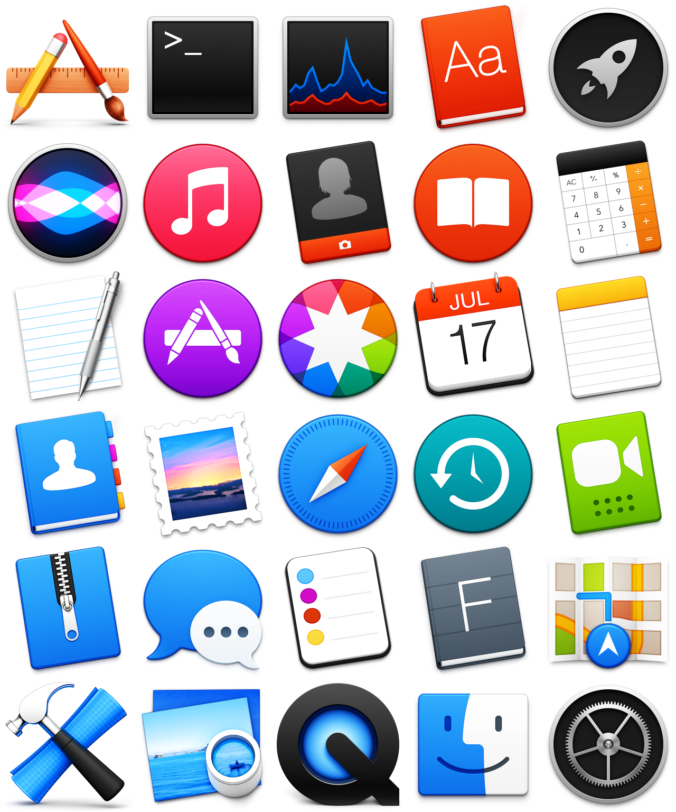
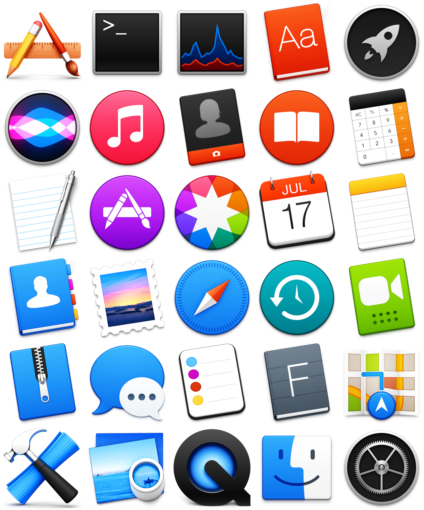

Over the holidays, I finished creating a set of 30 new icons for Apple's core macOS apps. Here's an overview of the result:
You can download the set here, and see the ensuing discussions on dribbble and reddit. Enjoy! ❤
A standardized, simplified, and beautiful icon set
Over the holidays, I finished creating a set of 30 new icons for Apple's core macOS apps. Here's an overview of the result:
You can download the set here, and see the ensuing discussions on dribbble and reddit. Enjoy! ❤